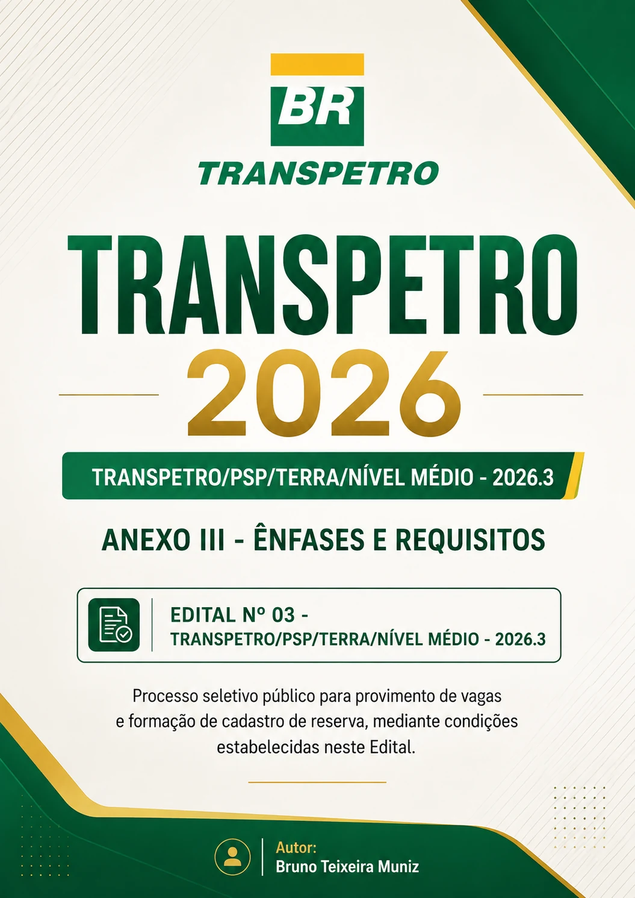

Conteúdo organizado por capítulo
Estude um tema por vez e acompanhe os 42 capítulos distribuídos conforme os grandes blocos cobrados.
Concentre sua preparação em um guia direto ao conteúdo do processo seletivo: teoria didática, pontos para decorar, atenção de prova, questões de fixação e simulado final.
Pagamento único · produto digital · sem mensalidade

PDFEsta apostila reúne os blocos gerais e específicos em uma sequência prática de teoria, exercício, correção e revisão para candidatos de nível médio.
Estude um tema por vez e acompanhe os 42 capítulos distribuídos conforme os grandes blocos cobrados.
Cada capítulo termina com cinco questões autorais de fixação e gabarito comentado para revisar os erros.
Quadros de “O que decorar” e “Atenção de prova” ajudam a transformar leitura em revisão ativa.
Conceitos são acompanhados de aplicações, resumos e fórmulas úteis para matemática e finanças.
Treine a distribuição do tempo com a mesma quantidade total de questões descrita para a prova objetiva.
Use a leitura do resultado e o plano final para priorizar os temas em que seu desempenho ainda precisa avançar.
O conteúdo do material percorre 6 módulos e 42 capítulos: da base de Português e Matemática aos conhecimentos específicos de processos, finanças, logística, legislação e informática.
Compreensão de textos, ortografia, coesão, classes de palavras, concordância, crase, pontuação e significação das palavras.
Conjuntos numéricos, razão e proporção, funções, equações, combinatória, probabilidade, estatística, matemática financeira e geometria.
Recursos Humanos, Sistema de Gestão Integrado, administração patrimonial, manutenção, indicadores e ESG.
Descontos, juros, registros contábeis, princípios, controle fiscal, fluxo de caixa, Balanço Patrimonial e DRE.
Supply chain, transportes, administração de materiais, gestão de estoques, armazenagem, manuseio, embalagem, compras, orçamento, Lei das Estatais, licitações e contratos.
Hardware, software, Windows 11, Microsoft Office 2024, internet, navegadores, segurança da informação e LGPD.
O guia foi estruturado para uma rotina ativa: compreender o conteúdo, resolver sem consultar, corrigir, registrar os erros e revisar.

Receba um material digital completo para estudar a ênfase Administração e Controle com sequência, exercícios e revisão.
Confira exatamente o que você recebe, para quem o material foi criado e quais cuidados tomar durante a preparação.
Ela foi desenvolvida como material independente de preparação para o PSP Transpetro Terra de nível médio 2026, com foco na ênfase Administração e Controle do Edital 03/2026.
O PDF possui 98 páginas, organizadas em 6 módulos e 42 capítulos.
São 210 questões autorais de fixação — cinco ao final de cada capítulo — mais um simulado final de 60 questões. Ao todo, o material contém 270 questões.
O conteúdo inclui Língua Portuguesa, Matemática, Processos Administrativos, Finanças e Contabilidade, Logística e Cadeia de Suprimentos e Noções de Informática.
Sim. As questões de fixação possuem gabarito comentado, e o simulado final de 60 questões acompanha gabarito e orientação para interpretar o resultado.
É um produto digital em formato PDF. Não há envio de livro impresso. O acesso será entregue conforme as instruções informadas pela plataforma de pagamento.
O PDF custa R$ 15,00, em pagamento único e sem mensalidade.
Sim. Ao clicar em comprar, você será direcionado ao ambiente externo da Kiwify. Antes de concluir o pagamento, confira no checkout o nome do produto, o preço de R$ 15,00 e as condições aplicáveis à compra.
Não. O e-book é um material editorial independente, produzido por Bruno Teixeira Muniz, sem vínculo, aprovação ou endosso da Transpetro, Petrobras ou Fundação Cesgranrio.
Não. Nenhum material pode garantir resultado em concurso. A apostila funciona como apoio de estudo; aprovação, classificação e convocação dependem do desempenho do candidato e das regras do processo seletivo.
Sim. Consulte sempre o edital, as retificações, os comunicados da organizadora e a legislação atualizada. Em caso de divergência, prevalecem as fontes oficiais.